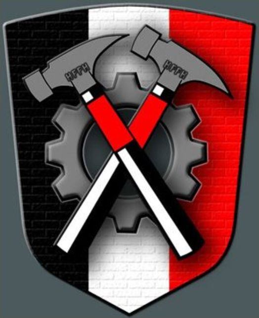

Impacto
A pesar de su turbulenta producción y del descontento de los creadores con el resultado final, The Wall se ha convertido en una película de culto.
La fusión de su banda sonora, animaciones únicas de Scarfe y una narrativa visual experimental hicieron que la película se consolidara como pieza central para amantes del rock y el cine transgresor. Dejando una huella profunda en la historia del cine y la música.
La película logró expandirse más allá de su propuesta musical y visual, abordando de manera simbólica temas como las secuelas de la Segunda Guerra Mundial y la alienación contemporánea. La exploración de los traumas, la incomunicación y las imágenes cargadas de surrealismo consolidaron a “The Wall” como una experiencia única para el público.
En el siguiente video se analisa la importancia del album en la cultura popular
Dato inquietante
Aunque el símbolo de los martillos cruzados se creó especialmente para la película y no se relacionaba con ningún grupo fascista real, fue adoptado por un grupo neonazi llamado The Hammerskins a finales de la década de 1980.
